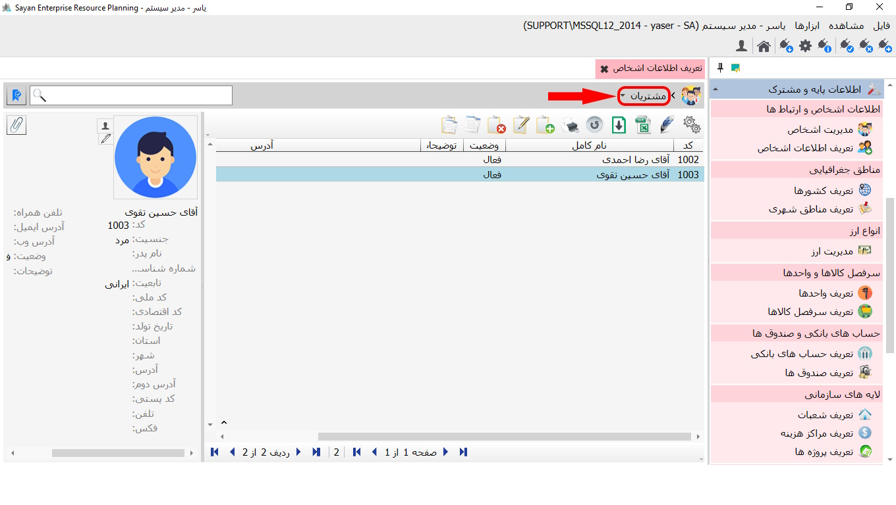
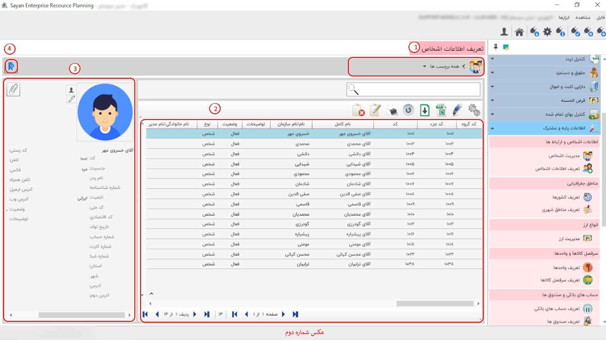
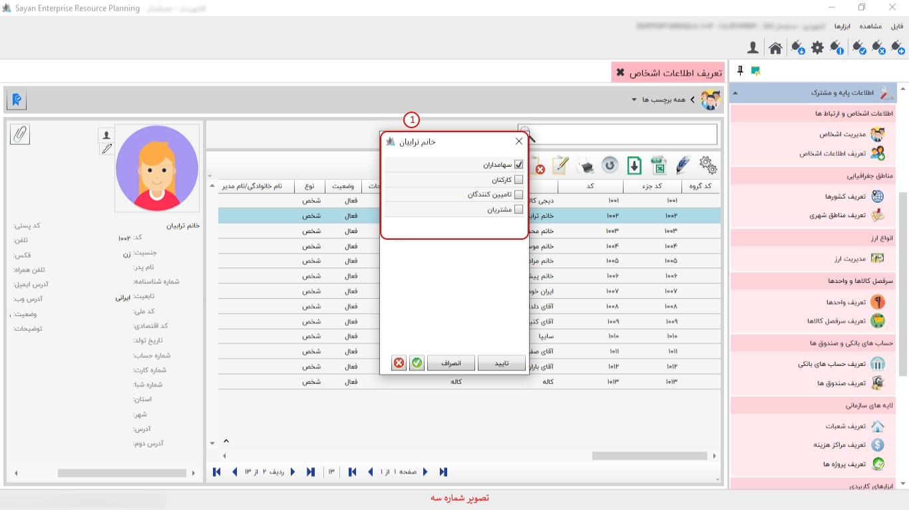
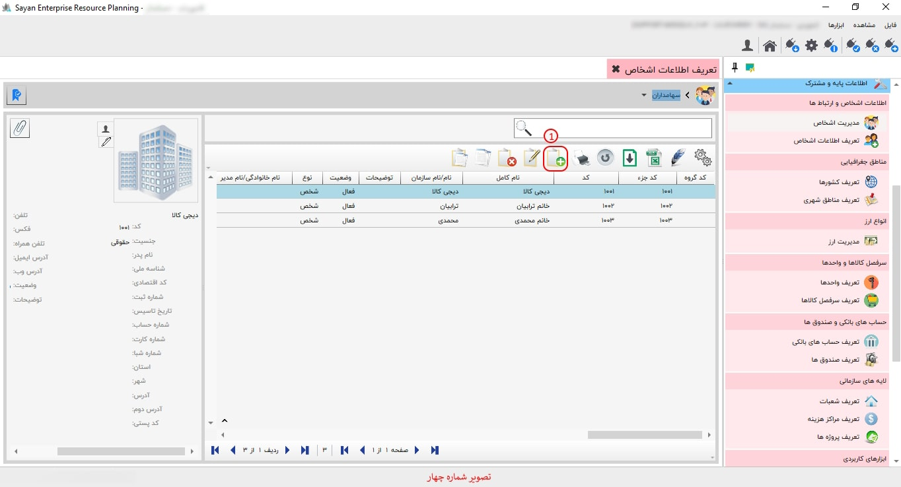

در این بخش، کاربران میتوانند برچسبها را مشاهده کرده و اشخاص را بهطور کلی یا بر اساس هر برچسب، با توجه به سطح دسترسی خود، بررسی کنند. همچنین، امکان افزودن شخص جدید به هر برچسب و همچنین ویرایش یا حذف اشخاص موجود نیز در این قسمت فراهم است. برای افزودن شخص جدید، ابتدا باید از بخش برچسبها، برچسب مورد نظر خود را انتخاب کنید. پس از انتخاب برچسب، گزینهای برای اضافه کردن شخص جدید نمایان میشود.
برای ادامه ی مطلب به تصویر شماره دو مراجعه نمایید.
-همه برچسب ها (کادر شماره یک):این بخش به شما امکان میدهد تا تمامی اشخاص حقیقی و حقوقی را که تعریف کردهاید، مشاهده کنید. با استفاده از انتخاب نوع برچسبها، میتوانید فیلتر کنید و فقط موارد مورد نظر خود را ببینید.
-کادر شماره دو:
برای ادامه مطلب به تصویر شماره سه مراجعه نمایید.
-کادر شماره یک:این بخش به شما این امکان را میدهد که برچسبهای مربوط به افراد مورد نظر خود را انتخاب و تأیید کنید.
برای ادامه مطلب به تصویر شماره چهار مراجعه نمایید.
